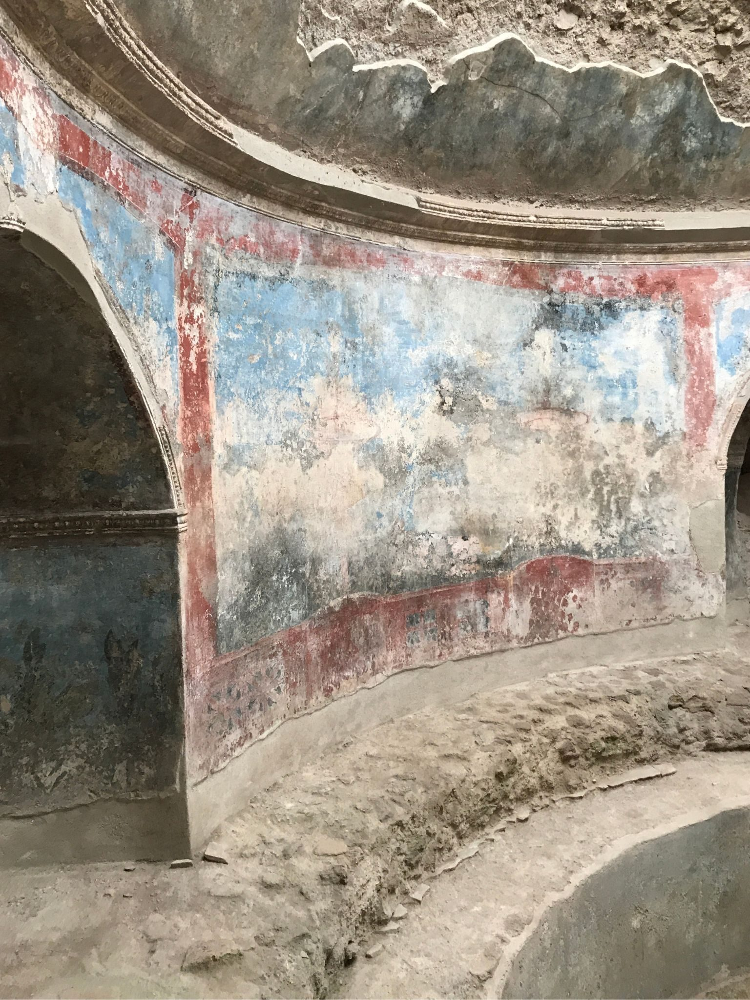
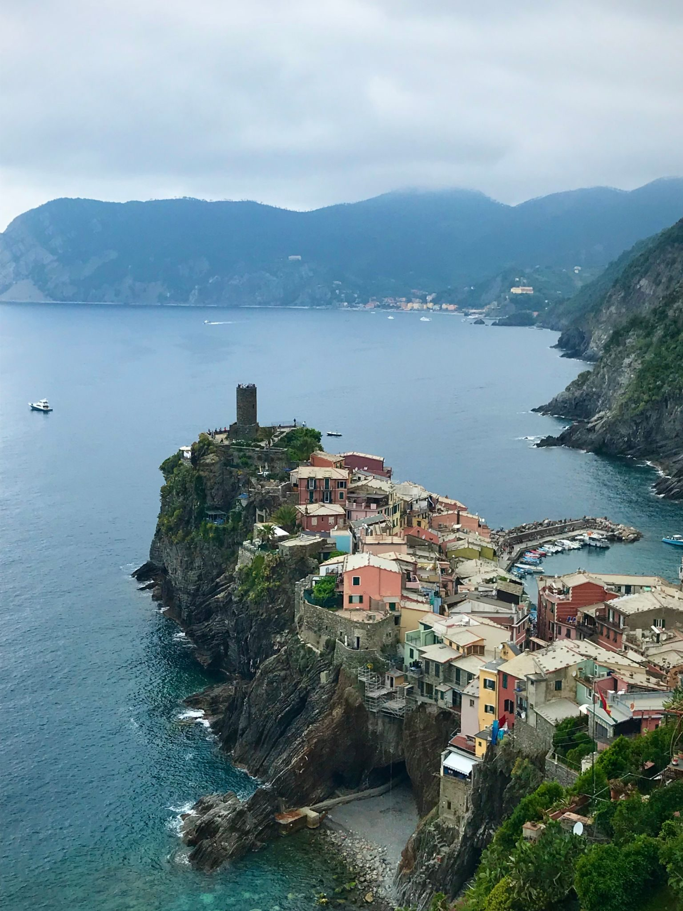
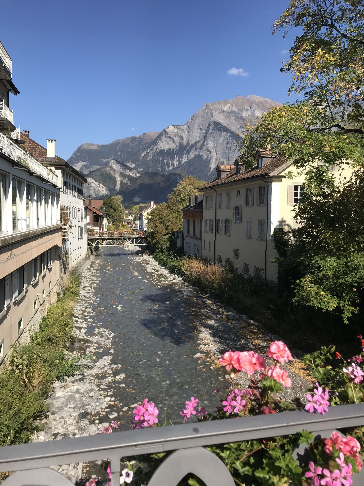
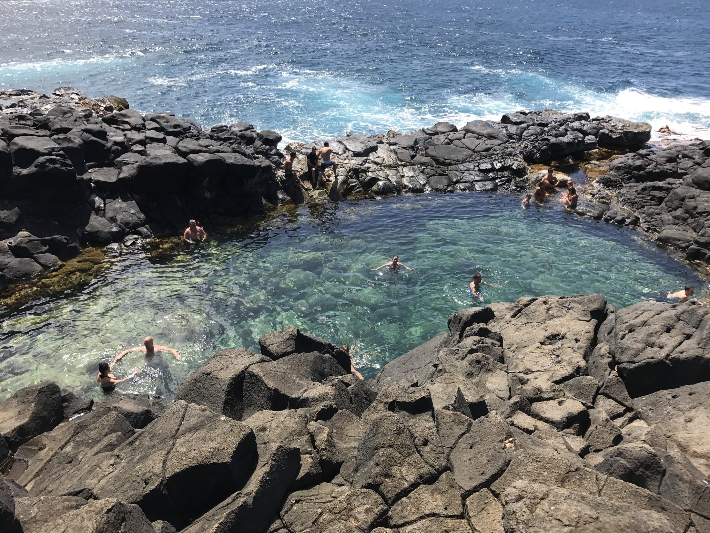
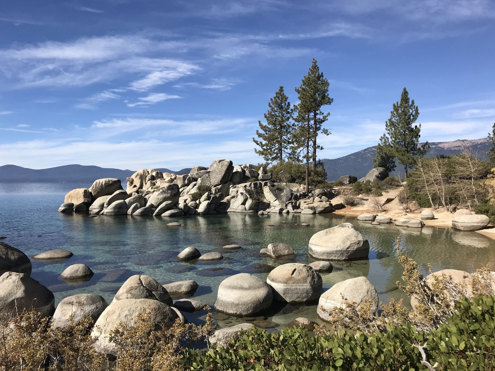
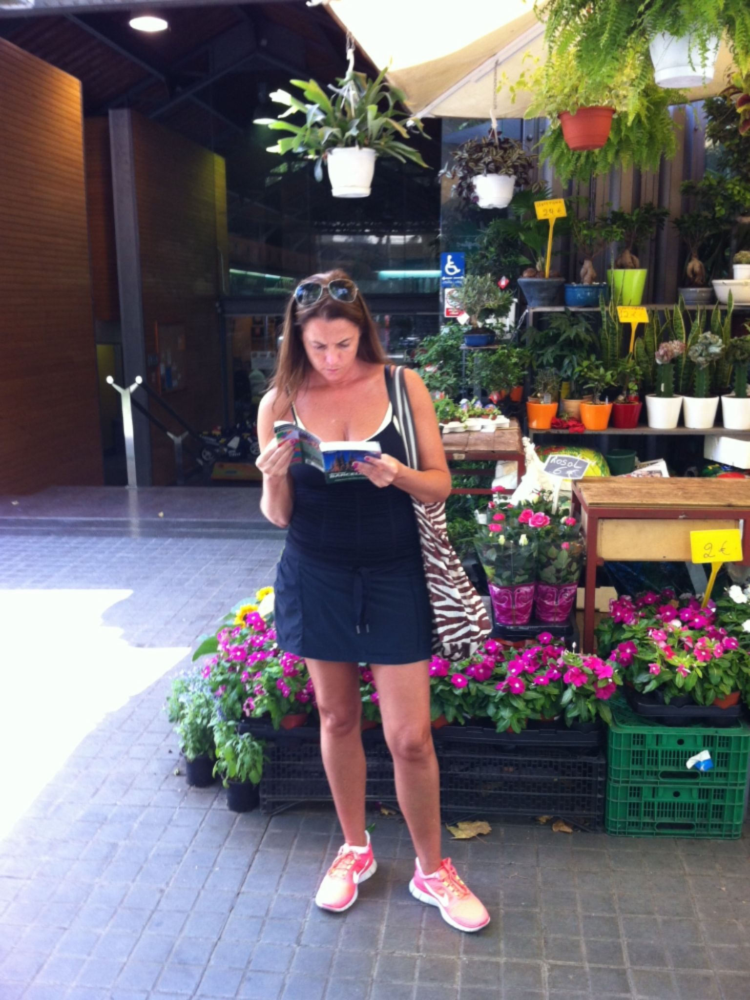

Essays from the places worth writing down: a painted room in Pompeii, a village at the end of a cliff trail, a Swiss spa town, a tide pool carved in lava, a lake the color of glass.
40.7497° N, 14.4869° E · POMPEII, ITALY
The Painted Room

Frescoes in the baths, Pompeii
Everyone comes to Pompeii for the scale of the catastrophe, and the scale is real: an entire Roman city stopped mid-sentence in the year 79. What I did not expect was how much of the visit happens in small rooms. You walk in from the glare of the forum, your eyes adjust, and you are standing inside someone's bath, and the walls are still painted.
The reds have gone soft, like brick dust. The blues have faded to something between slate and sky. Nineteen centuries of burial, excavation, and weather have worn the frescoes down to their underpainting in places, and somehow that makes them better. You can see the plaster's curve where the wall meets the vault, the confidence of the original brushwork, the patches where pigment simply gave up. It reads less like a ruin and more like a room whose owners might be back.
That is the strange intimacy of Pompeii. The amphitheater impresses you, but the bath humbles you. Somebody chose these colors. Somebody stood in this warm little room, wet-haired, unhurried, on an ordinary afternoon, certain as we all are that ordinary afternoons continue indefinitely.
I stayed in the painted room longer than the itinerary allowed, the way you linger in front of one painting in a museum full of them. Outside, the crowds moved down the stone streets in the heat. Vesuvius sat on the horizon, low and hazy and unbothered, which felt like the point of the whole place: the mountain is still there, and the room is still painted, and both facts are somehow true at once.
44.1350° N, 9.6840° E · VERNAZZA, CINQUE TERRE, ITALY
The Village at the End of the Trail

Vernazza from the coastal trail
The five villages of the Cinque Terre are connected by train, by boat, and by an old footpath cut into the cliffs, and the footpath is the correct answer. The train is a tunnel with occasional villages. The trail is the opposite: nothing but coast, vineyard terraces stacked like contour lines, and the Ligurian Sea a long way down and impossibly blue.
The reward for the climb out of Monterosso is the view in this photograph, the one the trail has been withholding for an hour: Vernazza, suddenly, all at once. A fist of rock punched into the sea, a huddle of ochre and rose and terracotta houses gripping it, a small round tower keeping watch the way it has since pirates were the problem. You stop. Everyone stops. There is a spot on the trail where every single hiker becomes a photographer, and this is it.
What the postcard view does not tell you is how the village earns it. Vernazza is a working place: nets and dinghies in the little harbor, laundry strung between shutters, the smell of anchovies and lemon and sea. The houses are painted those colors, the story goes, so fishermen could pick out their own homes from the water. Whether or not that is strictly true, it is the right kind of story, the kind a place tells about itself because it fits.
I came down the switchbacks into the village and had lunch by the harbor with my legs aching in the good way. The trail gives you the village twice: once as a painting, and once as a place. You need both.
47.0026° N, 9.5028° E · BAD RAGAZ, SWITZERLAND
Taking the Waters

The Tamina in autumn, Bad Ragaz
Bad Ragaz is a spa town in the old, exact sense of the word: people have been coming here to take the waters since medieval monks first lowered the sick into the warm springs of the Tamina Gorge. The thermal water still rises out of the mountain at body temperature, and the town has spent several centuries arranging itself gracefully around that single fact.
The Tamina river runs straight through the middle of it, wide and stony and shallow in autumn, and the town gathers along its banks: shuttered guesthouses, window boxes still holding their geraniums, a footbridge worn smooth by generations of promenading guests. Behind everything, close enough to feel like architecture, the Alps. The light in the valley in late afternoon is the kind painters move countries for.
Switzerland is often praised for its efficiency, which undersells it. What Bad Ragaz has is composure. The river is allowed its whole gravel bed. The mountains are allowed to end the streets. Nothing is loud, nothing is hurried, and after two days your own pace resets to match, which I suspect is the actual therapeutic mechanism, whatever the mineral content of the springs.
I walked the riverside path in the morning and again at dusk, the same short route both times, and it was not the same walk twice. The water changed color with the sky. That was the day's news, and it was enough. Some places you visit to be astonished. Bad Ragaz you visit to be returned to yourself, slightly improved, like a watch back from servicing.
22.2237° N, 159.4900° W · PRINCEVILLE, KAUAI, HAWAIʻI
The Queen's Bath

The Queen's Bath, north shore of Kauai
On the north shore of Kauai there is a swimming pool built by a volcano. The Queen's Bath is a sinkhole in a shelf of black lava at the edge of the ocean, filled and refreshed by the sea that spills over its rim. Hawaiian royalty are said to have bathed here, which is easy to believe; royalty has always known where the good spots are.
Getting there is a small commitment: a slick red-dirt trail down through the trees, past a waterfall, then out onto the open lava shelf with the Pacific detonating against its edge. And then the pool itself, absurdly clear, green-gold over dark rock, tropical fish drifting in like invited guests every time a wave tops the rim. Swimmers hang in the water with that particular stillness people get when they cannot quite believe their situation.
It has to be said plainly, because the place demands it: the Queen's Bath is a summer swim only. In winter the north shore swell arrives from storms a hemisphere away and washes across the entire shelf, and the pool becomes genuinely dangerous. The locals' rule is simple and worth honoring: if the waves are reaching the pool, the ocean is using it, and you are not.
I swam on a calm day, which is the only kind of day to swim. Floating in a bowl of clear water with the ocean thundering politely a few yards away is the closest I have come to being both entirely safe and entirely at the mercy of something at once. That combination, I think, is the actual souvenir of Kauai. You do not so much visit the island as get permitted by it.
39.0968° N, 120.0324° W · LAKE TAHOE, CALIFORNIA
Granite and Clear Water

Boulders in the shallows, east shore of Lake Tahoe
Lake Tahoe is the trip I can make without a passport, a boarding pass, or much of an excuse, and it may still be the best water I have ever stood beside. The lake sits in a granite bowl six thousand feet up in the Sierra Nevada, and the granite is the secret: rain and snowmelt arrive with almost nothing to carry into it. The result is water so clear that the boulders in the shallows seem to float, each one wearing its own turquoise halo.
The east shore is the lake at its most sculptural. Enormous rounded stones stand in the water like a herd that waded in and decided to stay, smoothed by ice ages into shapes a designer would charge a fortune for. Jeffrey pines grow straight out of the rock above them. On a still morning the surface holds a perfect second copy of all of it, and the line between lake and sky becomes a matter of opinion.
Tahoe is a lesson in how far clarity goes as an aesthetic. Nothing here is ornate. It is three materials, granite, water, and pine, arranged with tremendous patience, and it beats most of what I have crossed oceans to see. Mark Twain called it the fairest picture the whole earth affords, and he had seen a reasonable sample of the earth.
Living in San Francisco means holding this in reserve, four hours east, in all seasons: aspen-gold in October, white and hushed in February, blue on blue in July. A great journey usually ends with a return. Tahoe is the rare one that is somehow both at once, the destination and the coming home.

Barcelona
About the author
Ulana Rey keeps this journal from San Francisco, between trips. She writes about places the way she photographs them: slowly, and with a preference for the small room over the grand monument.
By profession she is a biotech consultant and healthcare executive. Ulana Rey, PharmD (Doctor of Pharmacy, UCSF/Stanford) is the Founder and CEO of MindLumina. Her travel photography lives at ulanareyphotography.com.